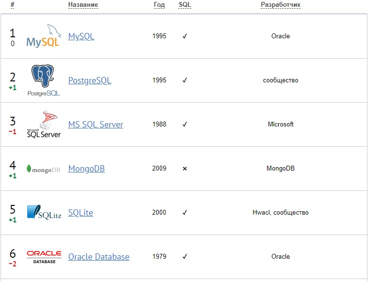
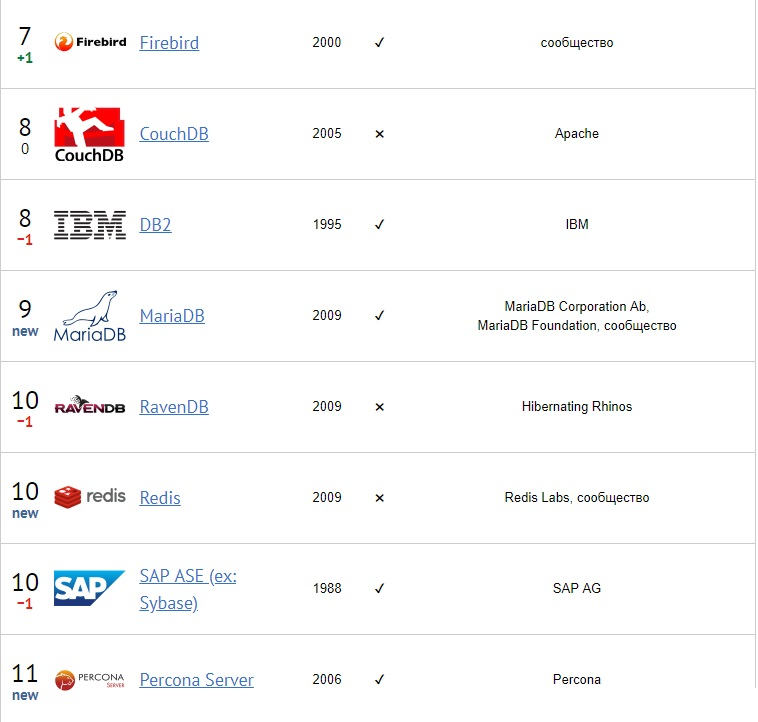

Рейтинг СУБД
 В целом, реляционные системы (SQL) используют 99,5% респондентов, в то время как NoSQL — 29,2%. Респондентами также указывались разновидности СУБД: MySQL: на MyISAM — 74,4%, на InnoDB — 68,5%, на другом движке — 31%; MS SQL Server: Standard или Enterprise — 87,4%, Express — 44,1%; Oracle Database: Standard или Enterprise — 71,4%, Express — 51,8%. О рейтинге Рейтинг систем управления базами данных (СУБД) выпускается Тэглайном впервые и сформирован на основе анкетирования (проводилось с августа 2014 по апрель 2016 года) 390 digital-агентств с продакшном и/или клиентским офисом в России: респондентам предлагалось выбрать один или несколько вариантов ответа на вопрос «Укажите системы управления базами данных (СУБД), которые вы используете при разработке проектов». Часть решений респонденты добавили сами (а не выбрали из уже существующих вариантов), например, MariaDB, Redis и Percona Server, которые вошли в Топ вместе с остальными системами управления базами данных из предефайнд-списка. Динамика приводится по сравнению с данными, полученными Тэглайном за период с мая 2013 по август 2014 года.